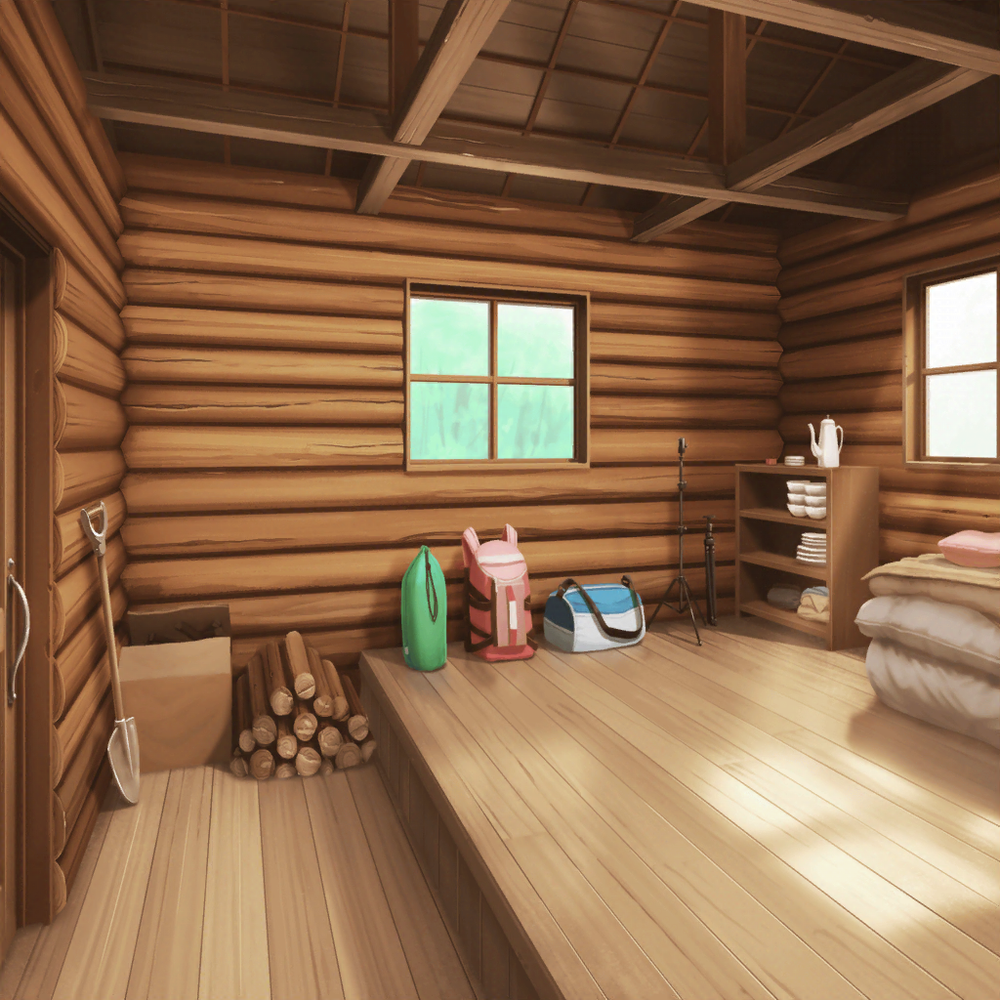
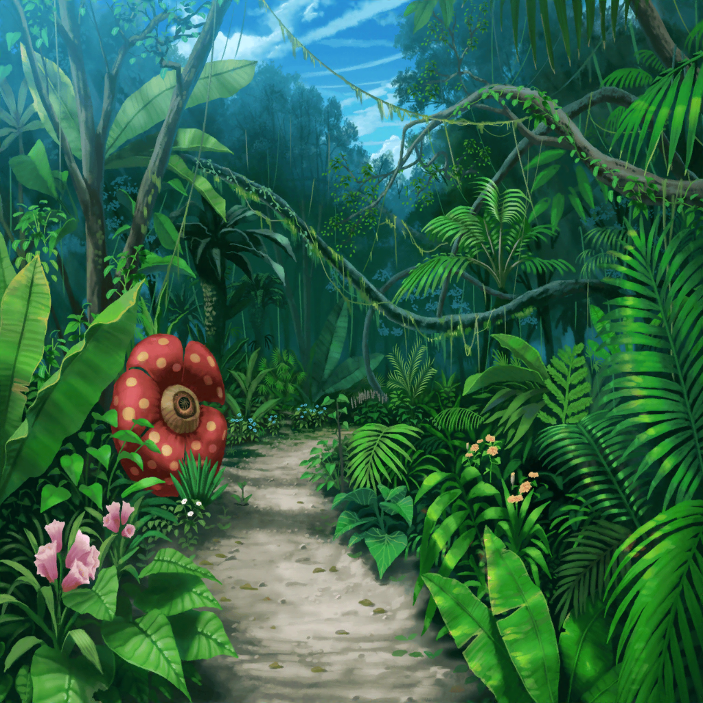

無人島 小屋の中
スタッフ
それではみなさん、第１ミッションです！
彩
えっ！ 小屋に着いた途端いきなり！？
スタッフ
では、ミッション内容を読み上げます。
最初のミッションは『自分達で食べるものを集める』です！
千聖
(やけにイキイキしてるわね。
さっきはミッションを出す前に麻弥ちゃんに
言われてしまったから、ホッとしてるのかしら？）
イヴ
食べ物集め……まるで兵糧攻めみたいですね！
千聖
イヴちゃん、その例えはちょっと違うと思うわ
千聖
それよりも……
やっぱり飲み水以外は、
自力で頑張らないといけないみたいね
彩
ふっふっふ～、みんな、安心して！
食べ物を集めるのなら、
私の持ってきた図鑑がきっと役に立つよ！
麻弥
彩さん、中身を見てもいいですか？
……おお、これはすごいですね！ 食べられるものと
そうでないものが、わかりやすく説明されてます！
イヴ
さすがアヤさんです！
日菜
よっ、彩ちゃん！
ナイスプレー♪
彩
えへへ、みんなの役に立ててよかった～！
麻弥
では、この図鑑を持って、
食べ物を取りに行くメンバーを決めましょうか
日菜
なんでみんなで採りに行かないの？
みんなで行ったほうが楽しくない？
彩
そうだよ！
みんなで行ったほうがたくさん食べ物が見つかるし
麻弥
確かにそうなんですけど……
ジブン達は、まだここに来て間もないです
麻弥
つまり誰も土地勘がない……
そんな状況で全員で探索に出て、もし遭難でもしたら、
ミッションの達成は不可能になってしまいます
麻弥
ですので、ジブンは待機班と探索班の二手に分かれて、
行動したほうがいいのではないかと……
そちらのほうが間違いなく生存率が上がると思います
日菜
おー、なんだかすごく説得力がある！
彩
遭難……生存率……
う、うん……そう言われたら私も、そんな気がしてきた……
イヴ
マヤさん……
もし食べ物を探している時に、はぐれてしまったら、
どうしたらいいでしょう……？
日菜
のろしでも上げればいいんじゃない？
火のつけかた、わかんないけど！
麻弥
そういう時は、その場で動かず大きな声を上げるなど、
他にも色々と方法があります。
後で、みなさんに教えますね
イヴ
ありがとうございます！
千聖
（遭難って……
みんな、撮影ってことをすっかり忘れてしまってるわね）
彩
それじゃあ、早速、班分けして食料を探しに行こうよ！
待機する人達は誰にする？
日菜
んー、そうだなー。
彩ちゃんは残った方がいいと思うな。
なんとなくだけど
彩
えっ、なんで！？
私、探しに行けるよ！
千聖
それなら、私は彩ちゃんと一緒に残ろうかしら。
彩ちゃんに何かあったら心配だから
イヴ
アヤさん、たくさん食料を確保してくるので、
楽しみにしていてくださいね！
彩
な、なんかみんなの中で、
私は待機班ってことで、もう決まってない！？
麻弥
みなさん、彩さんが大事だから心配してるんですよ。
そういうわけで、ジブン達を信じて待っていてもらえると、
嬉しいです
彩
う、うぅ……島を１周する時といい、
なんか、複雑だよ～！

無人島 森の中
日菜
ふんふふーん♪
……む！ 今、こっちから、るんって感じがした！
きっと食べ物がある気がする！
イヴ
ひ、ヒナさん！
あまり遠くに行くとはぐれてしまいますよ！
日菜
大丈夫、大丈夫！
……あ！ この木、変な形してる！
麻弥ちゃーん！ これはどう？
麻弥
お！ いいですねー、
次はこれに……っと
麻弥
やっぱりナイフを持ってきてよかった。
おかげで木に印をつけるのも楽にできます
イヴ
マヤさん、どうしてさっきから
特徴のある木に傷をつけているんですか？
麻弥
やー、こうしておけば、
もし小屋の場所がわからなくなっても、
この傷を目印にすれば近くまでは行けると思いまして……
イヴ
あ、なるほど！
マヤさん、すごいですね！
そんなことまで考えていたとは……
日菜
うんうん、ホントだよねー。
もしかして麻弥ちゃんって、サバイバルの経験とかあるの？
麻弥
いやいや、まさか！
そんな経験ないですよ！
麻弥
ただ、普段から初めて行くところでは、
帰りに迷わないように目印になる建物などを
覚えるようにしてるんです。その応用をしてるだけです
イヴ
でも、それを無人島でも活かせるなんて、
やっぱりマヤさんはすごいです！
日菜
……ん、あれっ？
ねぇねぇ、あそこの木、見てみてっ！
ほら、あそこに何か、るんってくる丸いものない？
イヴ
……あ、ホントですね！
あれってきっと果物ですよっ！
日菜
だよね！？
麻弥
ちょっと待ってください！
あれが食べられるか、この図鑑で調べてみます！
麻弥
……えっと、丸い実で色は、
赤みがかったピンク……ですね
麻弥
……おぉっ！
これは食べられる果物だそうですよ！
しかもかなり美味しいらしいですっ！
イヴ
やりましたねっ！
あの果物を採れば、ミッション達成ですね！
日菜
わーい！
イヴ
待っててくれている２人のためにも
たくさん採って行きましょう！
日菜・麻弥
おー！